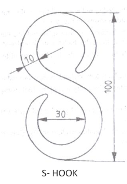
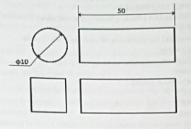

To make an S-hook from a given round rod, by following hand forging operation.
Smith’s forge, Anvil, 500gm and 1 kg ball-peen hammers, Flatters, Swage block, Half round tongs, Pickup tongs, Cold chisel.
1. One end of the bar is heated to red hot condition in the smith’s
forge for the required length.
2. Using the pick-up tongs; the rod is taken from the forge, and
holding it with the half round tongs, the heated end is forged into
a tapered pointed end.
3. The length of the rod requires for S-hook is estimated and the
excess portion is cut-off, using a cold chisel.
4. One half of the rod towards the pointed end is heated in the forge
to red hot condition and then bent into circular shape as shown.
5. The other end of the rod is then heated and forged into a tapered
pointed end.
6. The straight portion of the rod is finally heated and bent into
circular shape as required.
7. Using the flatter, the S-hook made as above, is kept on the anvil
and flattened so that, the shape of the hook is proper.
In-between the above stage, the bar is heated in the smith’s forge, to facilitate forging operations.
The S-hook is thus made from the given round rod; by following the stages mentioned above.
1. Hold the job carefully while heating and hammering
2. Job must be held parallel to the face of the anvil.
3. Wear steel-toed shoes.
4. Wear face shield when hammering the hot metal.
5. Use correct size and type of tongs to fit the work.
To make a square rod from a given round rod, by following hand forging operation.
Smith's forge, Anvil, 500gm and I kg ball-peen hammers, Flatters, Swage block, Half round tongs, Pick-up tongs, Cold chisel.
1. Take the raw material from stock i.e., mild steel 10 mm round shaped, cut the length of 50 mm.
2. Handle specimen with round tong and heat in blacksmith's forge up to the part appears as red cherry colour code.
3. The required piece heated up to it gets the recrystallization temperature.
4. The part is taken out from the forge and blow with sledge hammer for obtaining the square shape on all edges.
5. The hammering is done on the anvil.
6. The above mentioned all steps are done,
after the specimen bent in required shape.
7. Check the dimensions after cooling the job by quenching process.
In-between the above stage, the bar is heated in the smith’s forge, to facilitate forging operations.
The square rod is thus made from the given round rod.